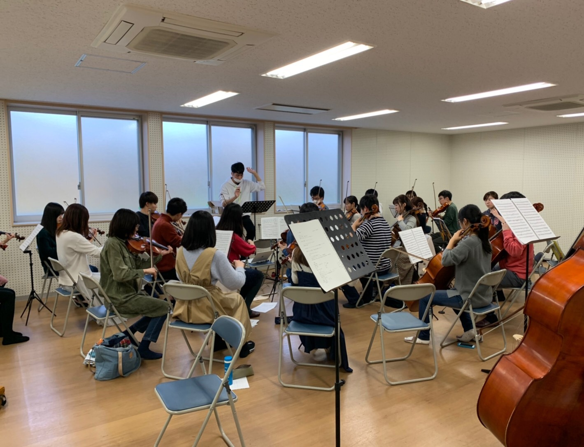
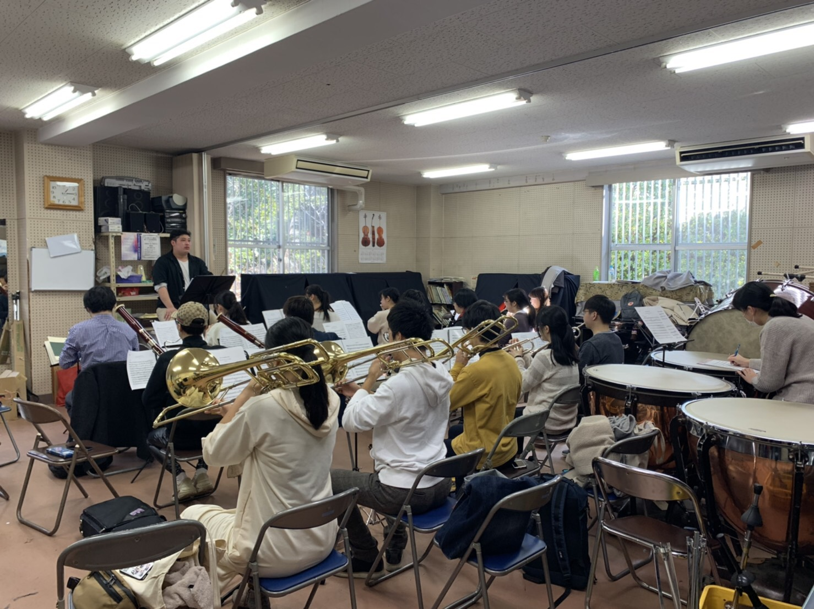
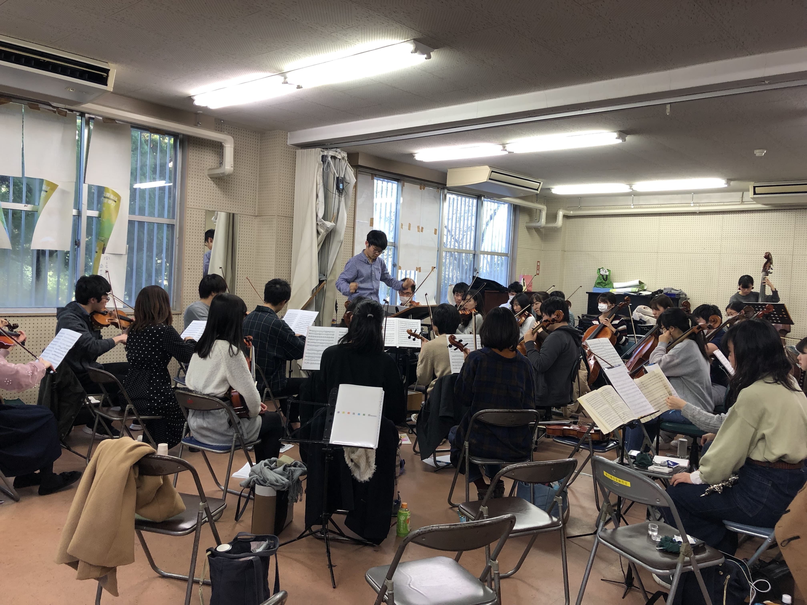
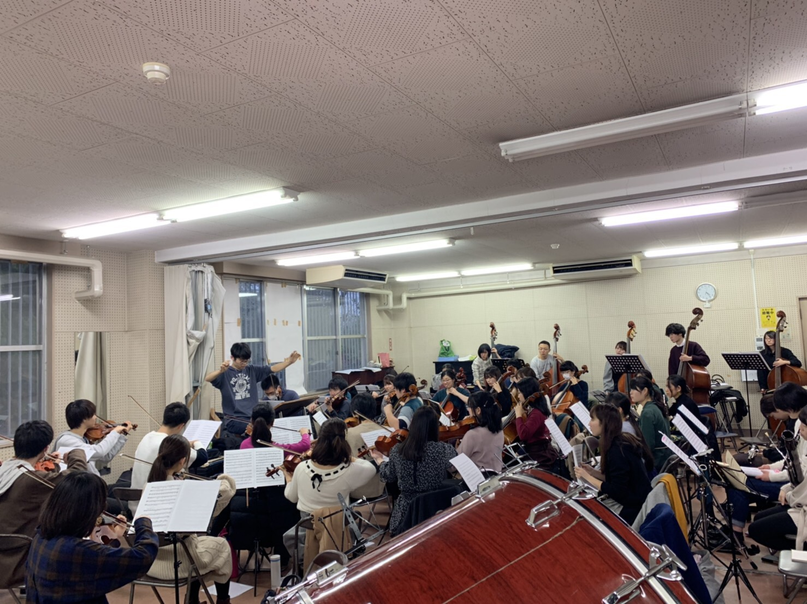
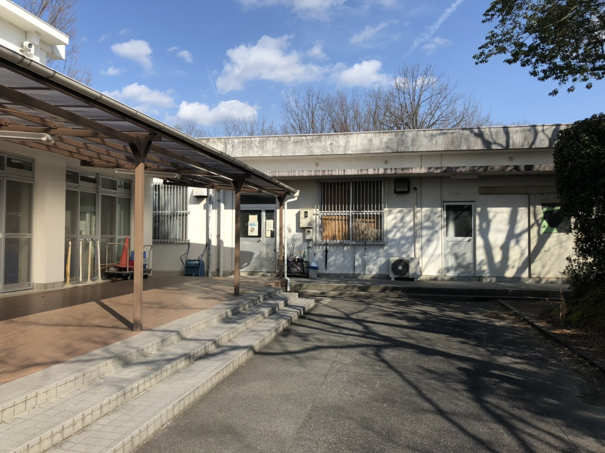
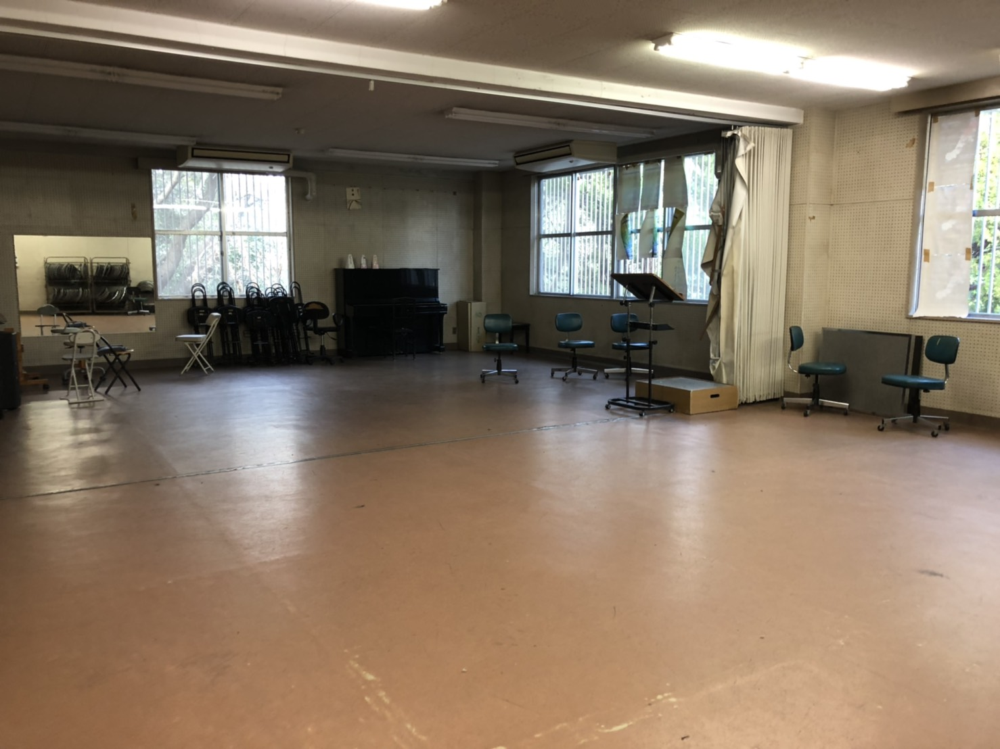

名古屋大学交響楽団第118回定期演奏会
Nagoya University Symphony Orchestra the 118th Regular Concert
トップメニュー
【名古屋大学交響楽団 第118回定期演奏会 中止のお知らせ】
新型コロナウイルスの感染拡大防止のため、誠に遺憾ながら5月10日(日)の第118回定期演奏会を中止させていただきます。
ご来場を予定され、公演を楽しみにしてくださったお客様には申し訳ありませんが、ご理解下さいますようお願い申し上げます。
つきましては、チケットをご購入いただいたお客様には払い戻しをさせていただきます。チケットをお持ちの上、購入した店舗での返金手続きをお願いいたします。〈払い戻し期間〉
2020年4月1日(水)〜5月20日(水)
〈チケット販売委託店舗 連絡先〉
芸文プレイガイド：052-972-0430
※第117回定期演奏会の会場でチケットをご予約いただきましたお客様には、当団の担当者から直接ご連絡させていただきます。
ご不明な点がございましたら以下の連絡先にご連絡ください
メールアドレス：nuso.118th@gmail.com
名古屋大学交響楽団 茨木優花
日時・会場
2020年5月10日(日)
愛知県芸術劇場コンサートホール
17:15開場 18:00開演
プログラム
モーツァルト作曲 / 歌劇『魔笛』K.620序曲
バルトーク作曲 / 舞踏組曲Sz.77
ブラームス作曲 / 交響曲第1番ハ短調作品68
指揮：新田ユリ
国立音楽大学卒業後、桐朋学園ディプロマコース指揮科に入学。尾高忠明、小澤征爾、秋山和慶、小松一彦の各氏に師事。1990年ブザンソン国際青年指揮者コンクールファイナリスト、1991年東京国際音楽コンクール＜指揮＞第二位受賞。東京交響楽団を指揮してデビュー後、国内主要オーケストラへ客演。2000年10月から1年間、文化庁芸術家在外研修生としてフィンランド・ラハティ交響楽団において、当時の音楽監督オスモ・ヴァンスカのもと研鑽を積む。以後、日本とフィンランドを拠点として活動を続ける。クオピオ交響楽団、ミッケリ市管弦楽団、ヨエンスー交響楽団、クリスチャンサン管弦楽団、南デンマークフィル、フィンランド国防軍吹奏楽団、フィンランド海軍吹奏楽団、ラ・テンペスタ等に客演。またオウルンサロ音楽祭、リエクサ・ブラスウィークに度々招聘。2015年愛知室内オーケストラ常任指揮者に就任。2019年夏、リエクサ・ブラスウィークの招聘を受け、フィンランド公演を行う。これまでにシプリアン・カツァリス、マキシム・ヴェンゲーロフ、ヨウコ・ハルヤンネ、オイスタン・ボーズヴィーク等世界的ソリストとも共演。現在日本シベリウス協会第3代会長を務める。国立音楽大学、相愛大学非常勤講師。
アクセス
地下鉄東山線、名城線「栄」駅下車 徒歩3分
または
名鉄瀬戸線「栄町」駅下車 徒歩2分
（オアシス21から地下連絡通路または2F連絡橋経由）
お車でお越しの場合 名古屋高速東新町出口から3分
チケット
全席自由席
前売り券：800円 当日券：1000円
・芸文プレイガイド
TEL：052-972-0430
ホームページはこちら
・チケットぴあ
TEL：0570-02-9999(Pコード：178-809)
販売ページはこちら
・名古屋大学生協
東山地区南部購買 TEL：052-781-1112
鶴舞地区医学部購買 TEL：053-732-5090
曲紹介
モーツァルト作曲 / 歌劇『魔笛』K.620序曲
Comingsoon...
バルトーク作曲 / 舞踏組曲Sz.77
Comingsoon...
ブラームス作曲 / 交響曲第1番ハ短調作品68
Comingsoon...
団員より
Violin1st
Comingsoon...
Violin2st
Comingsoon...
Viola
Comingsoon...
ViolonCello
Comingsoon...
Contrabass
特設サイトに足を運んで頂きありがとうございます！バストップです！幸運なことに第117回定期演奏会から続けてトップをさせて頂けることとなりました。ドキドキしながらパートや自分と向き合う日々です。
改めて思うと、前回ラフマニノフ交響曲第2番今回ブラームス交響曲第1番、贅沢すぎる事させて頂いていて本当に光栄です。
今回は第117回とは違いそれぞれ曲調がかなり異なるプログラムになりました。どの曲も練習していて大変楽しいです。
オープニングの魔笛は、あんな大きな楽器で軽やかに正確にサラッと弾かなきゃいけないの難しいなぁと思う事もありますが、妥協しないでやると自分の向上がよく分かる曲なのでとてもやり甲斐を感じています。耳にスっと入って来て凄く魅力的なので、ぜひ本番で！
サブメインについては、低音の方なら共感頂けると思うのですが舞曲のリズム打ち物凄く楽しいです。｢変態変拍子｣なんて言いながら苦戦していますが、慣れてくるととても自由で愉快で、Tuttiが毎回待ち遠しい曲です。
メインのブラームス交響曲第1番はやっぱり合わせた時の低音の重厚感がたまらないです！が、その厚い音を出すのに苦戦中でもあります。あっ今の音短い、軽くなっちゃった、という所を潰そうとすると、息を着く間が割となくてバテる場面も多いです。日頃の運動不足を恨みました。音も中々当てにくく、本番は集中力と体力勝負を確信しています。それでも、この曲でホールいっぱいにバスの音を響かせられたらと思うと凄くわくわくしています。
聞くのも弾くのも本当に楽しいプログラムです！本番もバス一同全力で楽しみます！！
コロナには負けません！5/10はぜひ芸文へ！！！
Flute
Comingsoon...
Oboe
Comingsoon...
Clarinet
Comingsoon...
Bassoon
Comingsoon...
Horn
Comingsoon...
Trumpet
Comingsoon...
Trombone
Comingsoon...
Tuba
Comingsoon...
Percussion
Comingsoon...
練習風景
名大オケでの普段の練習風景を掲載しています！
1月18日(土)
この日は弦楽器と管楽器に分かれて初分奏を行いました。
 2月9日(日)
この日は初tutti(全体合奏)でした。
2月16日(日)
2回目のtuttiでした。
3月13日(金)
コロナウイルスの影響により大学の授業が始まるまでサークル活動が禁止になり、普段私たちが練習している山の上練習場は閉鎖されています。長い間練習ができなくなってしまいとても残念です。5月の本番に向けて練習を重ねていかなければならず、不安な気持ちも大きいですが、トレーナーさんや各パートのトップさんを中心に各自で出来る練習を考えるなど工夫をして練習しています。
 